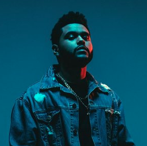
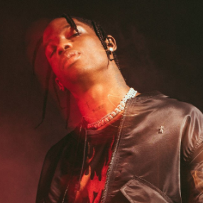

WEEKEND 1
The first weekend of the Fest, located in Seoul's most technologically advanced stadium arena, Seoul Arena, will be filled with thrill and floor vibrating bass of your favorite Hip Hop and RnB singers. With a setlist including artists like Drake, Rae Sremmurd, Kendrick Lamar and many more collaborations that will want you wishing for more. Bringing all culinary cultures together, you won't miss home, with our FoodBlurr Village at Blurr Fest combined with the amazing visuals at the live art section of the arena. This year's festival will activate all of your senses. You won't have time to be bored.

WEEKEND 2
The second week at Blurr Fest will leave others with the fear of missing out. With musical guests such as Kehlani, Sza, Beyonce and obviously, without missing Future, Migos and Travis Scott. This year, we mix music and fashion with designers such as Jeremy Scott and Balmain, joining us and making live appereances and shows to inspire you to the maximum. Live art will leave you astonished with Alec Monopoly and Aaron Kai, straight from Hawaii, ready to give Blurr that summer vibe that is meant to have.